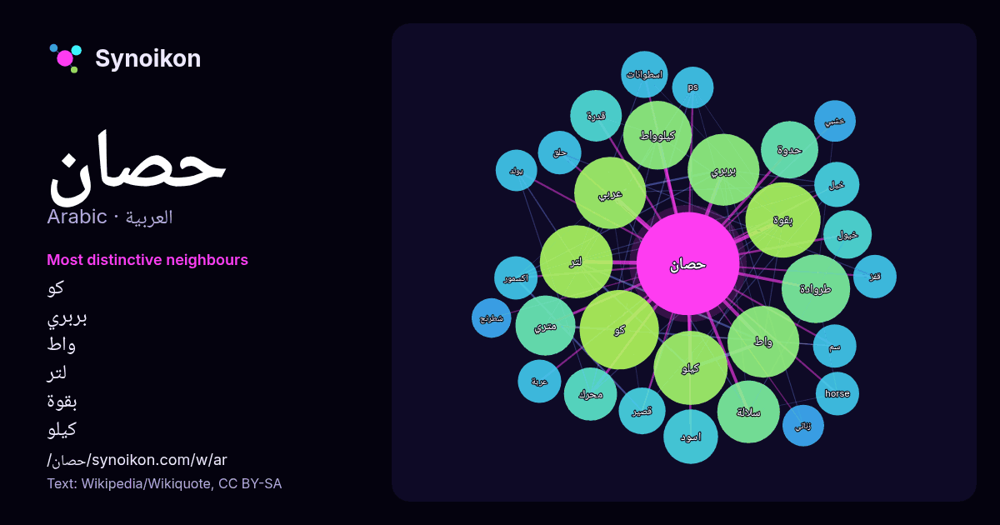

العربية · قائمة كلمات اليوم
حصان
“horse” · الكلمات الموجودة حولها في 727 ورودًا من ويكيبيديا, Wikiquote.

الجيران الأكثر تميّزًا
- كو 39×
- بربري 33×
- واط 32×
- لتر 32×
- بقوة 31×
- كيلو 31×
- كيلوواط 30×
- طروادة 28×
- متري 23×
- حدوة 22×
- سلالة 19×
- عربي 15×
- خيول 14×
- محرك 14×
- اسطوانات 14×
- horse 13×
- اكسمور 13×
- خيل 13×
- اسود 13×
- حلق 12×
× = كم مرة أكثر مما في نصوص ويكيبيديا العامة.
الجيران الأكثر تكرارًا
- كو 40
- بقوة 36
- كيلو 35
- لتر 34
- بربري 33
- عربي 33
- واط 33
- طروادة 30
- كيلوواط 30
- سلالة 25
- متري 23
- حدوة 21
- اسم 19
- اسود 19
- محرك 18
- قدرة 17
- نوع 17
- خيول 15
- اسطوانات 14
- قصير 14
في السياق
- QID:Q114878607، الحِصَانُ: الفحلُ من الخيل، والجمع حُصُنٌ. قال ابن جني: قولهم فرَسٌ حِصانٌ بَيِّنُ التحصُّن هو مُشْتَقٌّ من الحَصانةِ لأَنه مُحْرِز لفارسه، Wikipedia snippets · فرس
- في الأساطير اليونانية حصان طروادة (اليونانية: δούρειος ίππος، بالحروف اللاتينية: doureios hippos، ويعني "الحصان الخشبي")، هو حصان خشبي قيل أن اليونانيون Wikipedia snippets · حصان طروادة
- كومين البري (Equus cumminsii) † حصان فرانسيس (Equus francisci) † حصان يوكون، حمار يوكون البري (Equus lambei) † ضرب: الحصان الطويل، Dolichohippus حمار زرد Wikipedia snippets · خيل (جنس)
- على هيئة حصان خرافي أبيض اللون ذو قرن واحد، ذُكر في الأساطير الإغريقية واتُخذ كشعار لنبلاء العصور الوسطى في أوروبا. الصورة التقليدية للحصان أحادي القرن Wikipedia snippets · حصان وحيد القرن
- الغريبة والمحزنة للرجل المعروف بالسيد هاندز والذي توفي نتيجة ممارسته الجنس مع حصان". Vice. مؤرشف من الأصل في 2016-02-08. اطلع عليه بتاريخ 2016-01-01. بوابة Wikipedia snippets · حادثة الحصان الجنسية في إينمكلاو
- … نه غير معروف (مساعدة). بوابة السعودية بوابة إيران بوابة شبه الجزيرة العربية بوابة خيول في كومنز مواد ذات صلة بـ كحيلان (حصان). Wikipedia snippets · كحيلان (حصان)
- الحصان (♘ ♞) هو قطعة من قطع الشطرنج الصغيرة وترمـز إلى الحصان، يتم تمثيلها برأس حصان ورقبته وقيمته النظرية ثلاث بيادق، يتحرك الحصان ثلاث مربعات في كل Wikipedia snippets · حصان (شطرنج)
- الخيول تسميتها من اسم مستكشفها الروسي نيقولاي برجفالسكي. غزال برجفالسكي حصان برزوالسكي[وصلة مكسورة] "نسخة مؤرشفة". مؤرشف من الأصل في . اطلع عليه بتاريخ Wikipedia snippets · خيل برجفالسكي
كلمات أخرى
- أغنية
- إله
- تاريخ
- جبل
- جرس
- جزيرة
- جسر
- حديقة
- حقيقة
- حياة
- خبز
- خريطة
- خريف
- ذهب
- زمن
- ساعة
- شاي
- شتاء
- صحة
- صحراء
- صمت
- صيف
- طبيعة
- طريق
- طعام
- ظل
- عائلة
- عاصفة
- عسل
- علم
- عمل
- غابة
- فن
- قطار
- قطة
- قلب
- قوة
- كلب
- لغة
- ماء
- مال
- مدينة
- مرآة
- مطر
- ملح
- مناخ
- موت
- نجم
- والدة
حُسبت مسبقًا في 2026-10-09 بالإعدادات الافتراضية (±5 كلمات، مدوّنة متوسطة). يمكن للخريطة التفاعلية تحديثها ببيانات حية.
واجهة مترجمة آليًا؛ نرحب بالتصحيحات.